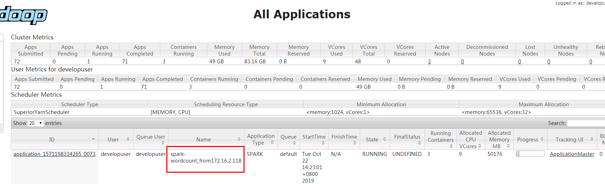
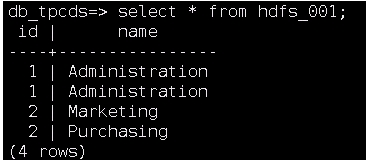
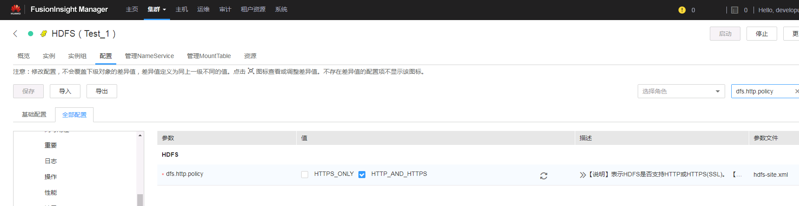
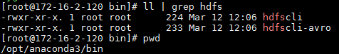
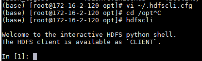
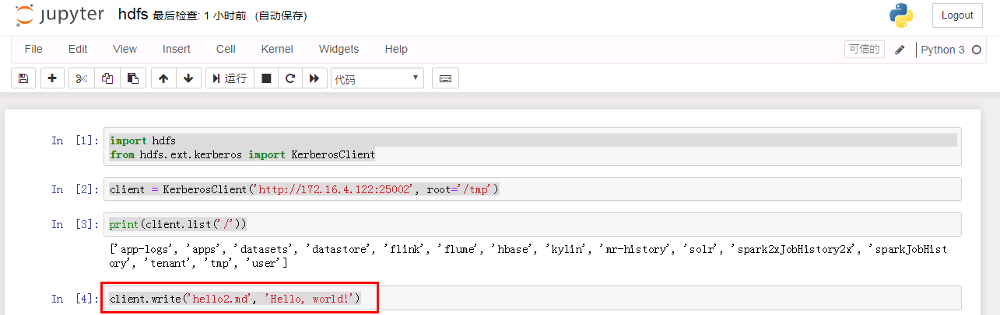
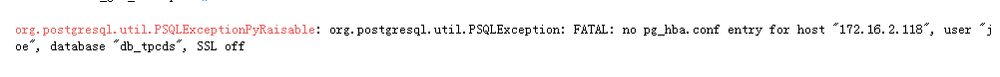

Jupyter Notebook对接FusionInsight¶
适用场景¶
Jupyter Notebook 2.7.16 ↔ FusionInsight HD V100R002C80SPC200 (Hive/Elk/Spark2x)
Jupyter Notebook 2.7.16 ↔ FusionInsight HD 6.5 (HDFS/Hive/Elk/Spark2x)
说明：Jupyter Notebook版本 基于Anaconda Python内核版本
安装Anaconda¶
参考Anaconda官方文档安装Linux对应的Anaconda：https://docs.anaconda.com/anaconda/install/linux/
-
使用命令
wget https://repo.anaconda.com/archive/Anaconda2-2019.03-Linux-x86_64.sh下载linux相关的安装包 -
使用命令
bash Anaconda2-2019.03-Linux-x86_64.sh开始安装 -
回车查看License Agreement
- 输入yes
-
选择安装位置不要选择默认位置，而设置为
/opt/anaconda2
-
完成安装后选yes进行初始化, 会将初始化设置写入
~/.bashrc文件中
-
使用命令
cp ~/.bashrc ~/.bashrc.anaconda将初始化之后的.basrc文件复制，重命名为.bashrc.anaconda， 内容如下：

红框部分为安装anaconda后加上的初始化配置
- 使用命令
vi ~/.bashrc编辑.bashrc文件，将conda初始化部分删掉：

-
使用命令
source ~/.bashrc.anaconda加载环境 -
使用命令
jupyter notebook --generate-config --allow-root生成jupyter notebook的配置文件

-
使用命令
vi /root/.jupyter/jupyter_notebook_config.py修改jupyter notebook的配置，具体如下： -
改Ip为本机Ip

- 改端口（如果被占用）

保存
-
在jupyter notebook主机安装对接集群的客户端，如果完成可以不做
-
使用如下命令启动jupyter notebook
source /opt/hadoopclient/bigdata_env kinit developuser source ~/.bashrc.anaconda export PYSPARK_DRIVER_PYTHON="ipython" export PYSPARK_DRIVER_PYTHON_OPTS="notebook --allow-root" pyspark --master yarn --deploy-mode client &

直接复制粘贴对应的地址访问jupyter notebook web UI：

对接Spark2x¶
说明：使用pySpark接口对接FI HD集群Spark2x组件
-
使用上一节命令启动jupyter notebook并进入weibUI
-
到如下链接获取需要的数据文件airlines.csv，并将数据文件上传到对接集群hdfs的/tmp路径下： https://github.com/beanumber/airlines/blob/master/data-raw/airlines.csv
-
新建一个notebook，输入python代码
from pyspark import SparkConf
from pyspark import SparkContext
conf = SparkConf()
conf.setAppName('spark-wordcount_from172.16.2.118')
sc = SparkContext(conf=conf)
distFile = sc.textFile('hdfs://hacluster/tmp/airlines.csv')
nonempty_lines = distFile.filter(lambda x: len(x) > 0)
print 'Nonempty lines', nonempty_lines.count()
words = nonempty_lines.flatMap(lambda x: x.split(' '))
wordcounts = words.map(lambda x: (x, 1)) \
.reduceByKey(lambda x, y: x+y) \
.map(lambda x: (x[1], x[0])).sortByKey(False)
print 'Top 100 words:'
print wordcounts.take(100)

并且在对接集群的yarn上查看任务：

对接Hive¶
说明：配置jdbc接口，对接集群Hive
-
如果jupyter notebook已经启动，先停止
-
找到anaconda安装目录/bin/pip可执行文件，需要安装jdbc相关的两个python包，使用如下命令安装:
./pip install JPype1==0.6.3 --force-reinstall ./pip install JayDeBeApi==0.2 --force-reinstall

注意：JPype1已经JayDeBeApi版本必须同上述一致，不然会报版本匹配错误，已经安装这两个包的可以通过如下命令检查版本：
./pip freeze | grep JPype1
./pip freeze | grep JayDeBeApi
-
将对接集群认证文件user.keytab放到jupyter notebook主机/opt路径下用于连接Hive认证使用,将认证相关的krb5.conf文件放到/etc/路径下
-
在jupyter notebook主机/opt路径下新建jaas.conf配置文件，内容如下：
Client { com.sun.security.auth.module.Krb5LoginModule required useKeyTab=true principal="developuser@HADOOP.COM" keyTab="/opt/user.keytab" useTicketCache=false storeKey=true debug=true; }; -
使用如下命令加载JVM参数：
完成后使用命令source /opt/hadoopclient/bigdata_env kinit developuser export JAVA_TOOL_OPTIONS="-Djava.security.krb5.conf=/etc/krb5.conf -Djava.security.auth.login.config=/opt/jaas.conf -Dzookeeper.server.principal=zookeeper/hadoop.hadoop.com -Dzookeeper.request.timeout=120000"java -version查看是否加载成功：

- 使用如下命令启动jupyter notebook
source ~/.bashrc.anaconda export PYSPARK_DRIVER_PYTHON="ipython" export PYSPARK_DRIVER_PYTHON_OPTS="notebook --allow-root" pyspark --master yarn --deploy-mode client &
说明： 如果不需要同Spark2x组件交互，可直接使用命令jupyter notebook --allow-root直接启动jupyter notebook
- 新建一个notebook，输入如下代码:
import jaydebeapi
import jpype
import os
# this worked
conn = jaydebeapi.connect(
"org.apache.hive.jdbc.HiveDriver",
["jdbc:hive2://172.16.6.10:24002,172.16.6.11:24002,172.16.6.12:24002/default;serviceDiscoveryMode=zooKeeper;principal=hive/hadoop.hadoop.com@HADOOP.COM;user.principal=developuser;user.keytab=/opt/user.keytab" , "developuser", "Huawei@123"], [ '/opt/hadoopclient/Hive/Beeline/lib/jdbc/' + 'commons-collections-3.2.2.jar','/opt/hadoopclient/Hive/Beeline/lib/jdbc/' + 'commons-configuration-1.6.jar', '/opt/hadoopclient/Hive/Beeline/lib/jdbc/' + 'commons-lang-2.6.jar','/opt/hadoopclient/Hive/Beeline/lib/jdbc/' + 'commons-logging-1.1.3.jar','/opt/hadoopclient/Hive/Beeline/lib/jdbc/' + 'curator-client-2.11.1.jar','/opt/hadoopclient/Hive/Beeline/lib/jdbc/' + 'curator-framework-2.11.1.jar','/opt/hadoopclient/Hive/Beeline/lib/jdbc/' + 'guava-14.0.1.jar','/opt/hadoopclient/Hive/Beeline/lib/jdbc/' + 'hadoop-auth-2.7.2.jar', '/opt/hadoopclient/Hive/Beeline/lib/jdbc/' + 'hadoop-common-2.7.2.jar','/opt/hadoopclient/Hive/Beeline/lib/jdbc/' + 'hadoop-mapreduce-client-core-2.7.2.jar','/opt/hadoopclient/Hive/Beeline/lib/jdbc/' + 'hive-common-1.3.0.jar','/opt/hadoopclient/Hive/Beeline/lib/jdbc/' + 'hive-exec-1.3.0.jar','/opt/hadoopclient/Hive/Beeline/lib/jdbc/' + 'hive-jdbc-1.3.0.jar','/opt/hadoopclient/Hive/Beeline/lib/jdbc/' + 'hive-metastore-1.3.0.jar','/opt/hadoopclient/Hive/Beeline/lib/jdbc/' + 'hive-serde-1.3.0.jar','/opt/hadoopclient/Hive/Beeline/lib/jdbc/' + 'hive-service-1.3.0.jar','/opt/hadoopclient/Hive/Beeline/lib/jdbc/' + 'hive-shims-0.23-1.3.0.jar','/opt/hadoopclient/Hive/Beeline/lib/jdbc/' + 'hive-shims-common-1.3.0.jar','/opt/hadoopclient/Hive/Beeline/lib/jdbc/' + 'httpclient-4.4.jar','/opt/hadoopclient/Hive/Beeline/lib/jdbc/' + 'httpcore-4.4.jar','/opt/hadoopclient/Hive/Beeline/lib/jdbc/' + 'libthrift-0.9.3.jar','/opt/hadoopclient/Hive/Beeline/lib/jdbc/' + 'log4j-1.2.17.jar','/opt/hadoopclient/Hive/Beeline/lib/jdbc/' + 'slf4j-api-1.7.5.jar','/opt/hadoopclient/Hive/Beeline/lib/jdbc/' + 'slf4j-log4j12-1.7.5.jar','/opt/hadoopclient/Hive/Beeline/lib/jdbc/' + 'zookeeper-3.5.1.jar']
)
import pandas as pd
sql = "Select * From drill_iris"
df_hive = pd.read_sql(sql, conn)
df_hive
conn.close()
说明：jaydebeapi.connect()为jdbc连接方法，jaydebeapi.connect("Driver Main Class", ["Connecting URL", "User", "Password"], "Path to JDBC driver")，对接hive需要将客户端hive jdbc样例中所有的jar包都导进去

对接ELK¶
说明：配置jdbc接口，对接集群ELK
- ELK配置
-
创建数据库用户joe, 密码为Bigdata@123， 并赋予用户joe所有权限
-
创建HDFS表空间
-
创建数据库db_tpcds
-
创建一个名称为“hdfs_001”的表，插入数据

-
参考ELK产品文档《远程连接数据库》配置ELK白名单，能够访问jupyter notebook主机
-
如果jupyter notebook已经启动，先停止
-
找到anaconda安装目录/bin/pip可执行文件，需要安装jdbc相关的两个python包，使用如下命令安装:
./pip install JPype1==0.6.3 --force-reinstall ./pip install JayDeBeApi==0.2 --force-reinstall
注意：JPype1已经JayDeBeApi版本必须同上述一致，不然会报版本匹配错误，已经安装这两个包的可以通过如下命令检查版本：
./pip freeze | grep JPype1
./pip freeze | grep JayDeBeApi
- 使用如下命令启动jupyter notebook
source /opt/hadoopclient/bigdata_env kinit developuser source ~/.bashrc.anaconda export PYSPARK_DRIVER_PYTHON="ipython" export PYSPARK_DRIVER_PYTHON_OPTS="notebook --allow-root" pyspark --master yarn --deploy-mode client &
说明： 如果不需要同Spark2x组件交互，可直接使用命令jupyter notebook --allow-root直接启动jupyter notebook
-
将ELK JDBC驱动jar包
gsjdbc4.jar放到jupyter notebook主机/opt路径下 -
新建一个notebook，输入如下代码:
import jaydebeapi import jpype jar = "/opt/gsjdbc4.jar" # location of the jdbc driver jar args='-Djava.class.path=%s' % jar jvm = jpype.getDefaultJVMPath() jpype.startJVM(jvm, args) # this worked conn = jaydebeapi.connect( 'org.postgresql.Driver', ["jdbc:postgresql://172.16.6.10:25108/db_tpcds" , "joe", "Bigdata@123"], "/opt/gsjdbc4.jar" ) import pandas as pd sql = "Select * From hdfs_001" df = pd.read_sql(sql, conn) df conn.close()

对接HDFS¶
选用python的hdfs包用作测试 https://pypi.org/project/hdfs/
原因：根据anaconda文档：https://enterprise-docs.anaconda.com/en/docs-site-5.1.2/user-guide/projects/connect-hive-impala-hdfs.html
可以得知使用上述工具包对接hdfs
- 因为此次使用webhdfs的http连接方式对接集群，首先先检查集群配置项是否符合要求：

若配置项只支持HTTPS，参考如下步骤修改
登录FusionInsight Manager页面，单击“集群 > 待操作集群的名称 > 服务 > HDFS > 配置 >全部配置”，在“搜索”框里搜索“dfs.http.policy”，然后勾选“HTTP_AND_HTTPS”，单击“保存”，单击“更多 > 重启”重启HDFS服务
- 登陆路径
/opt/anaconda3/bin, 使用命令./pip install hdfs安装插件包

再使用./pip install hdfs[avro,dataframe,kerberos]安装额外工具包
安装完成之后会在bin目录下生成hdfscli的可执行文件

- 使用命令
vi ~/.hdfscli.cfg编辑连接参数：
[global]
default.alias = dev
autoload.modules = hdfs.ext.kerberos
[dev.alias]
client = KerberosClient
url = http://172.16.4.122:25002
- 使用如下命令登陆集群客户端，并做kerberos认证
source /opt/125_651hdclient/hadoopclient/bigdata_env
kinit developuser
使用命令hdfscli登陆命令行终端

输入命令CLIENT.list('/')检查是否对接成功：

命令行测试成功
-
使用如下命令启动jupyter notebook
source /opt/hadoopclient/bigdata_env kinit developuser source ~/.bashrc.anaconda3 jupyter notebook --allow-root -
使用如下代码进行hdfs对接
import hdfs from hdfs.ext.kerberos import KerberosClient client = KerberosClient('http://172.16.4.122:25002', root='/tmp') print(client.list('/'))
-
继续使用如下代码往hdfs里写一个文件：
client.write('hello2.md', 'Hello, world!')

去hdfs对应路径检查文件是否写入成功：

- 继续使用如下代码从hdfs路径读取一个文件：
with client.read('iris.csv', encoding='utf-8') as reader:
for row in reader:
print(row)

F&Q¶
- 在使用pySpark的时候遇到如下问题：

ValueError: Cannot run multiple SparkContexts at once; existing SparkContext(app=PySparkShell, master=yarn) created by <module> at /opt/anaconda2/lib/python2.7/site-packages/IPython/utils/py3compat.py:289
sc.stop()
- 连接ELK时候报错：

解决办法：配置ELK白名单
- 连接hdfs的时候遇到报错：

解决办法：kinit完成kerberos认证